На месте следователи выясняют, почему машина внезапно отправилась вниз вместо того, чтобы опылять…
На месте следователи выясняют, почему машина внезапно отправилась вниз вместо того, чтобы опылять поля.…
НовостьПо данным источника
Алексей Русских встретился с избранными депутатами Госдумы и потенциальными сенаторами от Ульяновской области.
На месте следователи выясняют, почему машина внезапно отправилась вниз вместо того, чтобы опылять поля.…
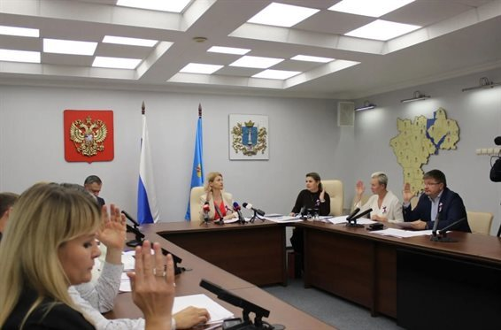
«Выборы депутатов Государственной думы Российской Федерации девятого созыва (по округу № 185 и № 186) и выборы губернатора Ульяновской области, голосование по которым проводилось 18,19 и 20 сентября, признаны состоявшимися, их результаты – действительными.……

Ульяновск, Орлова, 27А, к1 8 (8422) 335-665 Записаться онлайн: https://glazomer-clinic.ru/ Имеются противопоказания.…

В этом сезоне запланировано построить или отремонтировать инфраструктуру по 23 адресам — 16 объектов уже завершены.…

Судно получило повреждения, пилота с травмами доставили в больницу.…

Водитель «Лады», 45-летний мужчина, скончался на месте до приезда скорой. У водителя автомобиля взяли кровь на анализ. Водитель комбайна был трезв.

Титул спортсменке присвоила Международная шахматная федерация (ФИДЕ).…
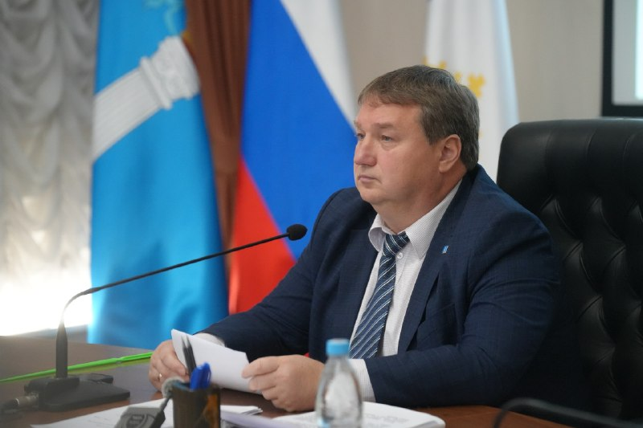
В этом дорожно-строительном сезоне предусмотрено построить или отремонтировать инфраструктуру по отведению поверхностных стоков по 23 адресам.…
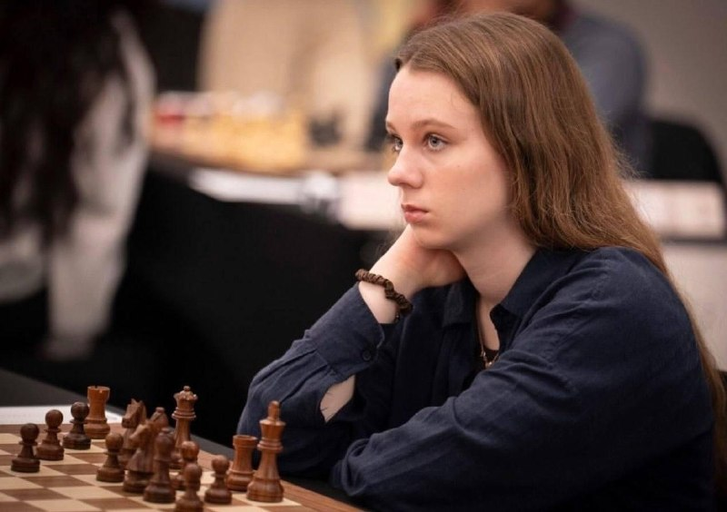
Высший мировой титул спортсменке присвоила Международная шахматная федерация (ФИДЕ).…

Об этом сообщили в региональном Министерстве физической культуры и спорта.…

Многие опрошенные добавляют, что обычно использовать весь отпуск не получается и отпускные дни просто копятся, а получить за них выплату можно только после увольнения.…

Ограждения убрали, асфальт уложили. Можно ехать! Мы закончили масштабную перекладку магистральной теплотрассы.…
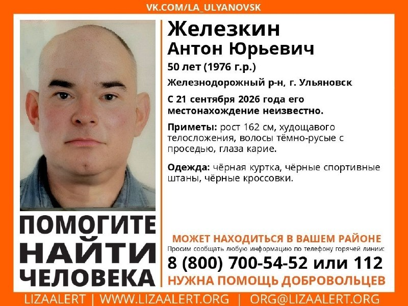

Приметы: рост 162 см, худощавое телосложение, тёмно-русые волосы с проседью, карие глаза.…

Стороны конфликта: жители сталинки и сотрудники облвоенкомата, участок которого примыкает к территории МКД.…
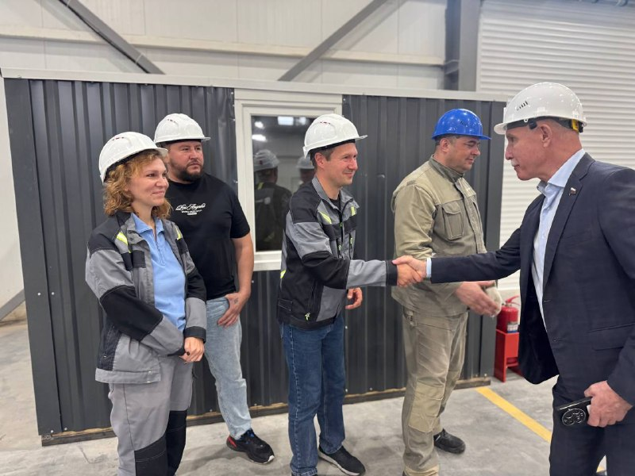
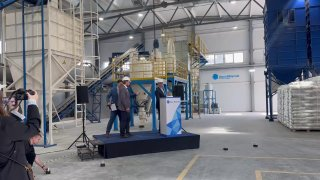
Знаю это предприятия уже более 4 лет, помню как ребята начинали.…

Соревнования организует яхт-клуб «Нейтрон». Открытие регаты и собрание капитанов начнутся в 10:00.…

Вся продукция допущена к реализации — нарушений ветеринарного законодательства не выявлено.…
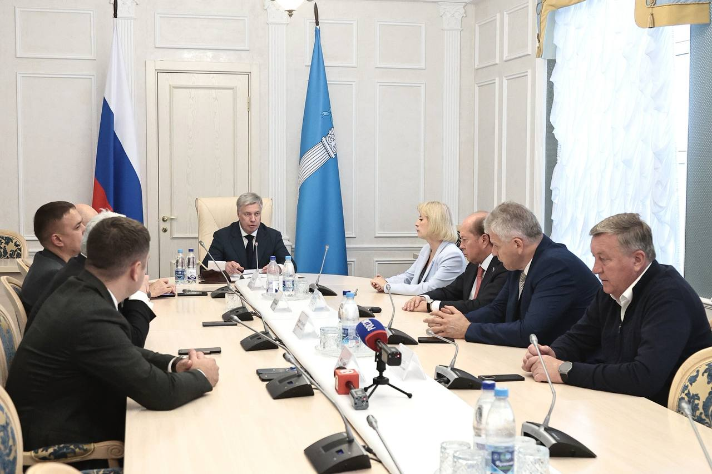
Губернатор Алексей Русских провёл встречу с избранными депутатами Государственной Думы и кандидатами на пост сенатора от Ульяновской области.…
▫️ Вместе нам предстоит совместная конструктивная работа на благо Ульяновской области.…
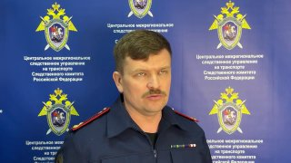
Следователи выехали на место, выясняются причины происшествия.…
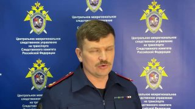
На месте работают следственно-оперативная группа и Ульяновский транспортный прокурор. Причины и обстоятельства происшествия устанавливаются.
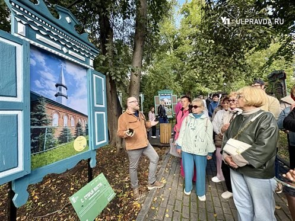

До сегодняшнего дня я ни разу не была даже гостем на таком мероприятии. Все-таки для меня это другая культура. Но сегодня мы отметили его по…
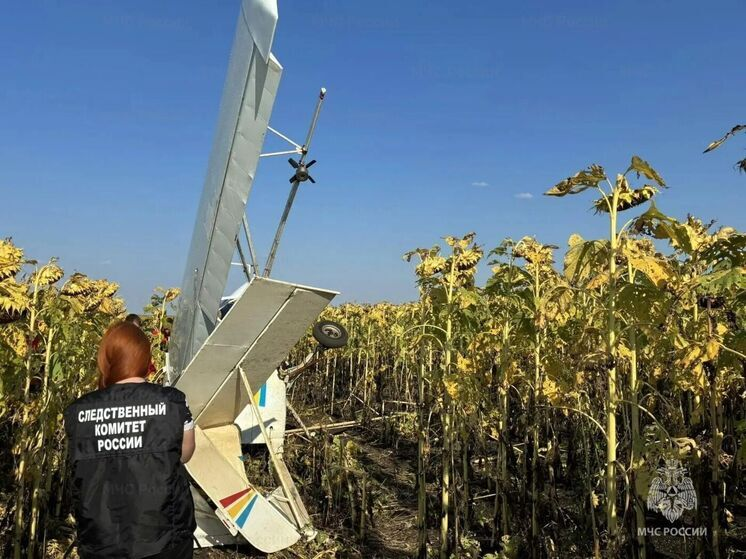
Следователи СК уточнили обстоятельства авиапроисшествия в Майнском районе, о котором Улпресса сообщала ранее.…

Гостем эфира станет главный специалист пульмонолог Министерства здравоохранения Ульяновской области, заведующая пульмонологическим отделением Ульяновской областной клинической больницы Ирина Галушина .…


Своё решение она объяснила антитеррористическими мерами и заботой о безопасности детей. 🤡 — что за бред?…

Самолёт, который проводил орошение полей с воздуха, совершил жёсткую посадку в поле.…
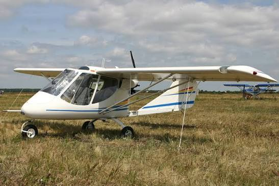
Как сообщают СМИ со ссылкой на оперативные службы, находившийся за штурвалом пилот получил травмы.…


✅ Соревнования прошли в Москве, в них участвовали больше 3700 спортсменов из 42 регионов.…

Соответствующий проект приказа опубликовало Агентство по тарифам Ульяновской области.…

Ничего по этому фильтру в ленте нет — показать все материалы.
Возник 15.09, пик 15.09 — сюжет держали 34 источника. Полная дуга — в недельнике.